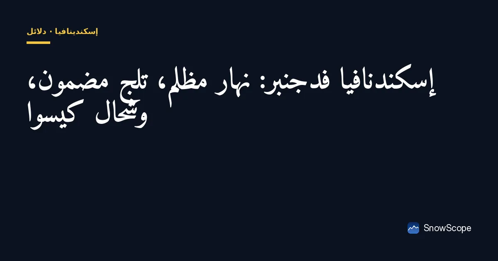

إسكندنافيا فدجنبر: نهار مظلم، تلج مضمون، وشحال كيسوا
دجنبر فـ إسكندينافيا كايجيب برد متأكد و نهار غامق. فـ المنتصف ديال الجبل فـ جميع البلاصات، التلج كايبلغ 30 سم أو أكثر فـ تقريبا كل شتوة—من 83 % فـ Levi و Ylläs إلى 100 % فـ Hemavan. المصيدة: النهار قصير، الأسعار غالية لي كاتتبدل حسب التاريخ فـ نرويج و السويد، و تقسيم من الجنوب إلى الشمال فـ الموثوقية.
شوف توقعات التلج مباشرة ديال Scandinavia in December فالتطبيق ديال SnowScopeالعلو ديال التلج، التنبيهات والخريطة 3D، فابور.
البلاصات لي الحظ كايدير معاك فيها
إذا كنتي تتزحلقي فـ المنتصف ديال الجبل، إسكندينافيا متوقعة. Hemavan و Hemsedal و Oppdal و Geilo جميعهم كايبلغو 30 سم أو أكثر فـ 96–100 % ديال الأسابيع ديال منتصف دجنبر عبر 46 شتوة. Hemavan ريادة فـ العلو ديال التلج: 82 سم هو التقليدي فـ 15 دجنبر فـ المنتصف ديال الجبل. المنتصفات ديال الجبال ديال السويد و فنلندا كاتتبع: Ylläs 38 سم (التوسط عبر جميع البلاصات المنخفضة)، الجهات المنخفضة ديال Hemavan 82 سم، المنطقة المتوسطة ديال Hemsedal 70 سم.
البلاصات المنخفضة و المحطات الجنوبية أكثر خطرة. Sälen، أقل و أكثر جنوبية محطة سويدية، كاتشوف 30 سم أو أكثر فـ فقط 48 % ديال الأسابيع ديال منتصف دجنبر. Idre Fjäll كاتدبر 65 %، Åre 89 %. الأسلوب واضح: روح أعلى أو روح شمال من أجل الموثوقية ديال الشتوة.

أسبوع الكريسماس ضد بداية دجنبر
بداية دجنبر هي رهان فـ الجنوب. فـ المنتصف ديال Sälen، فقط 48 % ديال الشتوات كان عندهم 30 سم بحلول 15 دجنبر فـ الأسبوع ديال 15–21 دجنبر. شوية. أسبوع الكريسماس (22–28 دجنبر) أكثر أماناً: 61 % ديال الشتوات جابو 30 سم فـ Sälen بعد، و 98 % فـ المنتصف ديال جبل Hemsedal و 98 % فـ Geilo. المحطات الشمالية مثل Hemavan كاتبقى مستقرة: 100 % فـ جميع الأسابيع فـ المنتصف ديال الجبل.
فـ القمة عبر جميع المحطات، دجنبر تقريباً متأكد. القمة ديال Hemavan (1136 م) شافت 30 سم أو أكثر فـ 100 % ديال منتصف دجنبر و أسابيع الكريسماس كذلك. خطط نزهة بداية دجنبر شمال أو عالي؛ خطط نزهة أسبوع الكريسماس في أي بلاصة.
الرهان ديال الارتفاع: القاعدة ضد القمة
المحطات الحادة كاتجبر على اختيار. Hemsedal كاتسقط 800 م من القمة إلى القاعدة؛ Hemavan 674 م؛ Oppdal 742 م. فـ القاعدة فـ منتصف دجنبر، الموثوقية ديال التلج كاتسقط بشكل حاد. الوادي ديال Hemsedal (640 م) كايبلغ 30 سم فـ فقط 57 % ديال الأسابيع ديال منتصف دجنبر؛ القمة ديال Hemsedal (1439 م) كايبلغو فيها 100 %. القاعدة ديال Oppdal (585 م) كايضربها 93 %، لكن ذاك ما متأكد بحال. المحطات المسطحة لي ما عندها عمق كبير—Sälen و Idre Fjäll و Levi و Ruka—كاتتفادو هاد التقسيم لكن كاتبدأ أقل بشكل عام.
أسبوع الكريسماس كايقلص الفجوة. فـ القاعدة ديال Hemsedal، 65 % ديال الشتوات كايبلغو 30 سم أو أكثر فـ أسبوع الكريسماس، من 57 % فـ منتصف دجنبر. خطط الركضات ديال القاعدة من أجل الكريسماس؛ خطط المنتصف ديال الجبل من أجل أي أسبوع ديال دجنبر.
الاتجاهات طويلة الأجل: الشمال كايبقى مستقر
على مدار 15 شتوة اللي فاتو (2011–12 إلى 2025–26)، المحطات الشمالية محافظة على التلج. أسابيع الكريسماس ديال Hemavan بزاف جابو 30 سم فـ المنتصف ديال الجبل فـ 100 % ديال الشتوات؛ Levi فـ 100 %؛ Hemsedal فـ 100 %؛ Ylläs فـ 100 %. Oppdal و Ruka جميعهم دبروا 93 %. لكن المحطات الجنوبية المنخفضة ضعفت. أسابيع الكريسماس ديال Sälen سقطات إلى 47 % ديال الشتوات لي فـ 30 سم فـ المنتصف ديال الجبل، من أسهم أعلى فـ السجل الكامل ديال 46 شتوة. Idre Fjäll كاتجلس فـ 60 %.
هاد التحول مهم من أجل التخطيط. إذا عندك مرونة، احجز شمال أو عالي. إذا كاتضطر تتزحلقي الجنوب فـ دجنبر، اختار أسبوع الكريسماس و احجز ركضة ارتفاع عالي.
الأسعار: فنلندا مثبتة، نرويج و السويد سائلة
فنلندا كاتنشر أسعار مثبتة و كاتبقى معاهم. Levi كاتفرض 60 يورو فـ اليوم (أو 57 يورو إذا حجزتي أونلاين 14 يوم قبل)، Ylläs 60 يورو (55.50 يورو إلى 11 دجنبر)، Ruka 58 يورو فـ اليوم أو 265 يورو من أجل 6 أيام. كاتقدري تخططي الميزانية و تحجزي لي بأمان.
نرويج و السويد كاتستعملو الأسعار ديال دينامية حسب التاريخ. Geilo كاتضهرها 590 نوكة (تقريباً 56 يورو على معدل الصرف ديال 12 نونبر)، لكن Trysil و Hemsedal و Hafjell و Oppdal و Åre و Sälen و Idre Fjäll و Hemavan ما كاتنشرو أسعار مثبتة على الدكاكين ديالهم ديال أونلاين. احجز بزاف و أونلاين؛ تفادى أسبوع عطلة الكريسماس إذا الثمن مهم معاك.
النهار: خطط حول الظلام
النهار فـ دجنبر كاتتقل كاتمشي شمال. الجنوب ديال نرويج و السويد بزاف عندهم شوية ساعات ديال النهار الحقيقي؛ لابلاند ديال فنلندا دخلات الليل القطبي. Levi و Ylläs كاتجلسو فـ الظلام من أجل جزء ديال دجنبر، واخت الشمس ما كاتطلع فوق الأفق. هاد حاجة غريبة لكن برد، و هاد كاتقطع ساعات الزحلقة بشكل حاد. ابدا قبل الفجر إذا كنتي تبغي النهار ديال بعد الزوال؛ جيب طبقات قاعدية ثقيلة و مدفيات اليد؛ توقع الركضات باش تبقى جامدة.
المحطات بـ ارتفاع متوسط فـ نرويج و السويد الوسطانية كايدولو أفضل. Geilo و Oppdal و Hemsedal عندهم ساعات نهار أكثر من الشمال ديال بعيد لكن بزاف أقل من الصيف. خطط أحسن ركضات ديالك قبل الغدا و اخذ التلفريك تحت إذا كايتبدل الظلام.
نصايح للي كيتزلجو
- من أجل سعر مثبت كاتقدري تخططي لـ الميزانية، اختاري فنلندا: Levi و Ylläs و Ruka كاتنشرو اليوم و التذاكر ديال أيام متعددة بلا مفاجآت.
- فـ نرويج و السويد، اشري تذاكر التلفريك أونلاين و احجز بزاف؛ الأسعار كاتتبدل لي لـ التاريخ و أعلى فـ النافذة ديال عطلة الكريسماس.
- اختار المنتصف ديال الجبل أو أعلى من أجل الموثوقية ديال دجنبر؛ الركضات ديال القاعدة أكثر أماناً فـ أسبوع الكريسماس من بداية دجنبر.
- فـ المحطات الجنوبية (Sälen و Idre Fjäll و Åre)، استنيا إلى أسبوع الكريسماس؛ المحطات الشمالية (Hemavan و Ylläs و Levi) موثوقة من بداية دجنبر.
- أيام دجنبر قصيرة: ابدا عند أول النهار، اقل الغدا بسرعة، و شيك على التنبيه القومي ديال الانهيارات قبل الزحلقة عن الركضات الحرة فـ الظلام.
على هاد الأرقام
العلو ديال التلج فالمحطات هو أكثر تلج فالجهة الفوقانية فالتاريخ المكتوب؛ هادو تقديرات لمنطقة، ماشي قياس فنقطة وحدة. التوقعات يمكن تتبدل. ديما شوف النشرة الرسمية ديال الانهيارات قبل ما تخرج من البيست.
كيفاش تستاشهد بهاد المقال
للبحث، التعليم ولا الصحافة: الأرقام والرسومات تقدر تعاود تخدم بيهم بحرية تحت CC BY 4.0 مع هاد الاستشهاد.
SnowScope (2026), إسكندنافيا فدجنبر: نهار مظلم، تلج مضمون، وشحال كيسوا, https://snowscope.app/blog/ar/2026/11/scandinavia-december-skiing-dark-days-sure-snow-cost.html, تشاف ف 2026-11-14
SnowScope (Atlas Labs). (2026, November 14). إسكندنافيا فدجنبر: نهار مظلم، تلج مضمون، وشحال كيسوا. SnowScope snow reports. https://snowscope.app/blog/ar/2026/11/scandinavia-december-skiing-dark-days-sure-snow-cost.html
BibTeX
@misc{snowscope2026scandinaviadecemberskiin,
author = {{SnowScope (Atlas Labs)}},
title = {إسكندنافيا فدجنبر: نهار مظلم، تلج مضمون، وشحال كيسوا},
year = {2026},
month = nov,
howpublished = {\url{https://snowscope.app/blog/ar/2026/11/scandinavia-december-skiing-dark-days-sure-snow-cost.html}},
note = {Published 2026-11-14 13:29 UTC; accessed 2026-11-14}
}· CC BY 4.0 · الطريقة، الداتا والأدوات →
تابع Scandinavia in December
فابور: ميساج ملي يجي التلج، والتوقعات كل صباح.